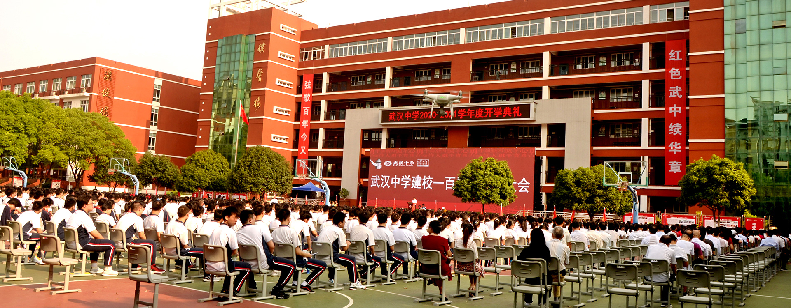

百年武中
首页 ＞ 百年武中
以英雄城市命名的学校
武汉中学是以武汉这所英雄的城市命名的学校，1920年由老一辈无产阶级革命家董必武等人创办，从这里走出了董必武、陈潭秋、李汉俊等三位党的“一大”代表。2020年正值百年华诞，学校办学底蕴深厚。
自创办以来，一直秉承董老题写的“朴诚勇毅”校训，着力培养高中生的健全人格，百年来为国家培育了大批建设者和接班人。
朴 · 诚 · 勇 · 毅
学校1978年被定为湖北省首批重点中学，2001年被评为湖北省办学水平示范学校，2013年被评为湖北省文明单位，2017年又被评为全市首批普通高中领航试点学校，是市、区共管的十所重点高中之一。
80%+
高考一本上线率
169
教职工总数
3
特级教师
103+
硕士研究生
武中校史 · 百年足迹
- 1920年董必武等人创办武汉中学，确立“朴诚勇毅”校训。
- 1978年被定为湖北省首批重点中学。
- 2001年被评为湖北省办学水平示范学校。
- 2011年被评为武汉市首批“群众满意中小学”。
- 2013年被评为湖北省文明单位。
- 2017年被评为全市首批普通高中领航试点学校。
- 2018年获武汉市普通高中领航学校称号，成为全市首批十一所领航学校之一。
- 2020年建校百年华诞；高考一本率82.2%，600分以上108人。
- 至今连续十七年获“武昌区高考质量一等奖”，四星级智慧校园。
武中校歌
校歌曲调激昂庄重，承载着“朴诚勇毅”的百年精神，激励一代代武中英才砥砺前行。完整歌词以学校正式发布版本为准。
（校歌歌词 · 待以学校官方文本为准）
长江之滨，武昌古城，
百年学府，薪火相承。
朴诚勇毅，立身之本，
强国之志，代代相传。
武中校训 · 朴诚勇毅
朴
朴素、朴实、艰苦奋斗，不忘初心本色。
诚
诚信、忠诚、真诚待人，立身处事之本。
勇
勇敢、担当、敢于求索，不畏艰难险阻。
毅
坚毅、刚毅、持之以恒，成就远大理想。
武中校园

学校位于文化底蕴浓厚的武昌古城，云集了黄鹤楼、户部巷、昙华林等众多历史文化景点。地处武昌中心粮道街，地铁2号线和7号线经过学校附近，多路公交直达粮道街站和胭脂路站。
2016年起，学校打造武昌区“智慧校园”先进示范单位，拥有现代化的教学资源：每间教室配备双制空调与电子交互白板；学生食堂宽广明亮、干净卫生；学生公寓4-6人一间，配置空调、热水器。
设有模联社、模政社、机器人社、摄影社、文学社、动漫社、美食社等12个社团，广泛开展活动，促进学生个性化成材。